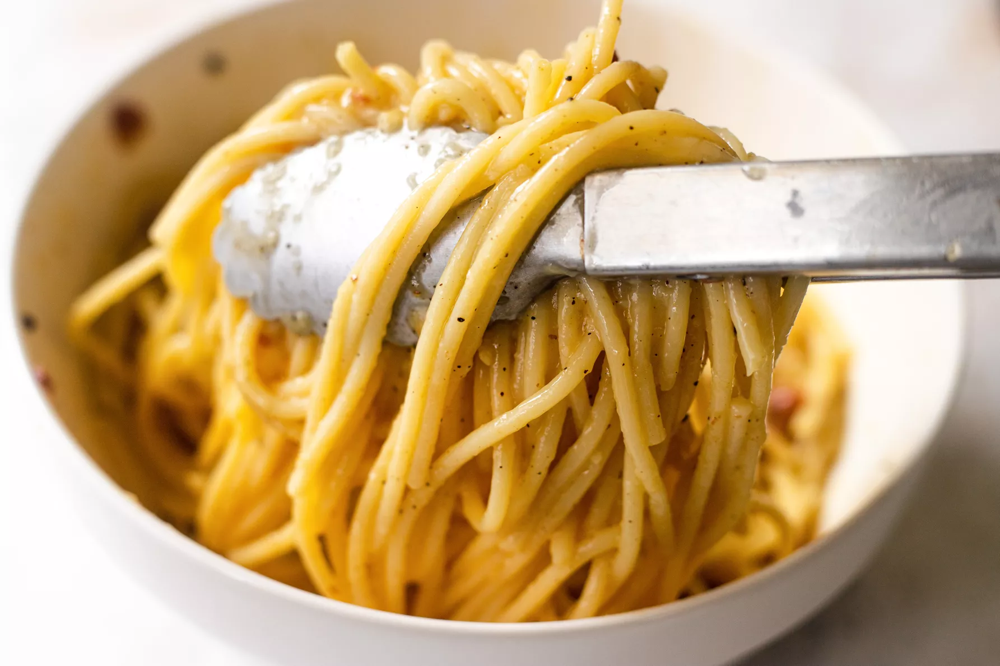

Original web
Pasta Carbonara
What you need
| Ingredient |
Amount |
| Olive oi |
1 tablespoon |
| Bacon |
200g |
| Whole eggs |
3-4 |
| Garlic cloves |
1 teaspoon |
| Parmesan |
1 cup |
| Spaghetti |
500g |
| Salt |
to taste |
| Pepper |
to taste |
- Heat pasta water
- While the water is coming to a boil, heat the olive oil or butter in a large sauté pan over medium heat. Add the bacon or pancetta and cook slowly until crispy.

- Beat eggs and half of the cheese
- Once the water has reached a rolling boil, add the dry pasta, and cook, uncovered, at a rolling boil.
- Toss pasta with bacon

- Add the beaten eggs with cheese and toss quickly to combine once more.

- Serve at once with the rest of the parmesan and freshly ground black pepper. If you want, sprinkle with a little fresh chopped parsley.
